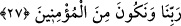
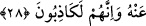

bir zarar vermez.
27. Onların ateşin karşısında durdurulup “ah, keşke dünyaya geri gönderilsek de
bir daha Rabbimizin âyetlerini yalanlamasak ve inananlardan olsak!” dediklerini
bir görsen!...
Hitap, Rasûlullah (s.a.)’e ve onların içine düştükleri tahassürü duyan gören
herkesedir.
“Onların ateşin başında durdurulmuş iken” ona baktıkları andaki tahassürlerini bir
görsen, onların acınacak hallerini anlatmada kelimelerin yetersiz kaldığını farkederdin.
İşte o vakit derler ki: “Ah ne olurdu keşke biz” dünyaya “geri çevrilseydik de,
Rabb’imizin âyetlerini yalanlamasaydık.” Kur’an’ı inkâr etmeseydik, biz de onlara
“inananlardan olsaydık.” âyetlerin gereğince amel etseydik de bu korkunç manzarayı
görmeseydik.
Mânâ şöyledir: Eğer dünyâya geri gönderilirsek yalanlamayız ve mü’minlerden
oluruz.
28. Hayır! Daha önce gizlemekte oldukları şeyler (günahlar) kendilerine
göründü. Eğer (dünyaya) geri gönderilseler yine kendilerine yasak edilen şeylere
döneceklerdir. Zîrâ onlar gerçekten yalancıdırlar.
“Hayır, daha önce gizlemekte oldukları, onlara göründü. İş, onların dediği gibi
değildir. Eğer onlar tekrar dünyaya döndürülselerdi yine de îman etmezlerdi. Çünkü
onların kıyamet gününde vâkî olan bu temennîleri inanmaya rağbet ettiklerinden
değildir. Dünyada iken yalanladıkları cehennem mahşer yerinde kendilerine gösterilince
onların bu isteği sâdır olmuştur.
Âyetteki “gizlemekte oldukları şey” cehennemi yalanlayıp inkâr etmeleridir. Çünkü
bir şeyi yalanlamak onu örtmek ve gizlemektir.
Eğer onlar faraza dünyaya “geri gönderilselerdi, yine men olundukları şeyi yapmaya
dönerlerdi.” Gözleriyle gördüklerini tamamen unutup tekrar Allah’a ortak koşmaya
yeltenirlerdi. Çünkü onlar gâibde olanı bir tarafa bırakıp gözlerini görünen şeylere
dikerler. Nitekim İblis de Allah’ın pek çok ayetlerini görmüş, sonra inanmamakta inad